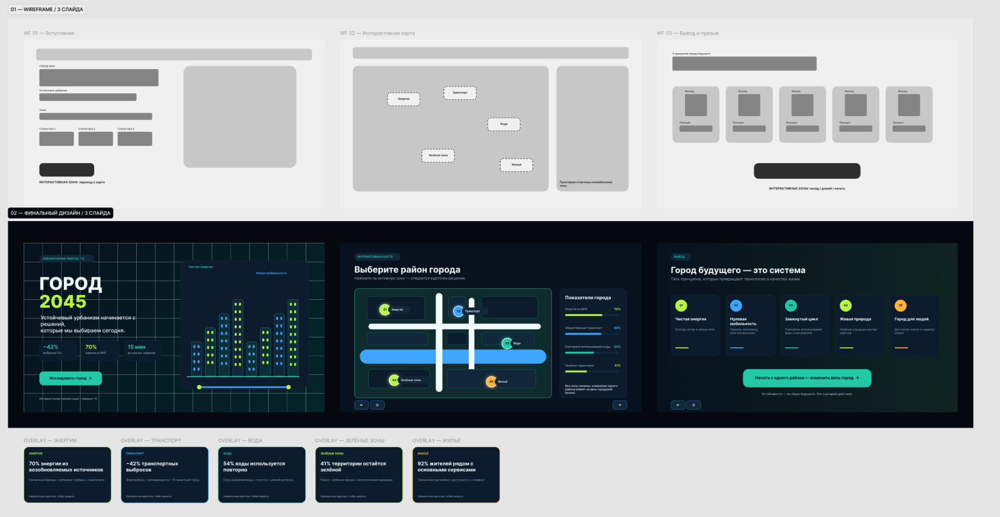
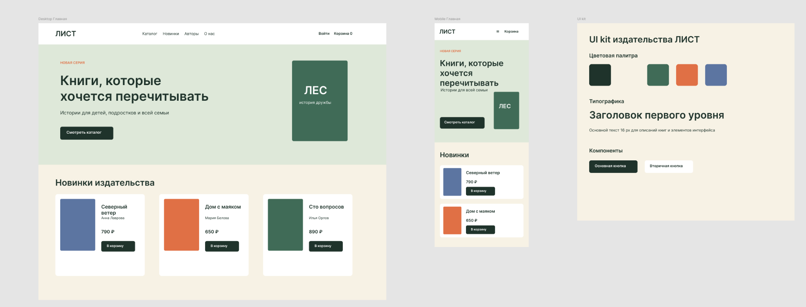
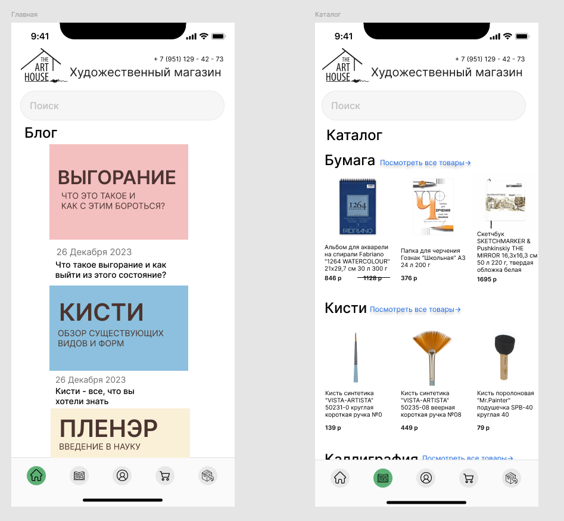
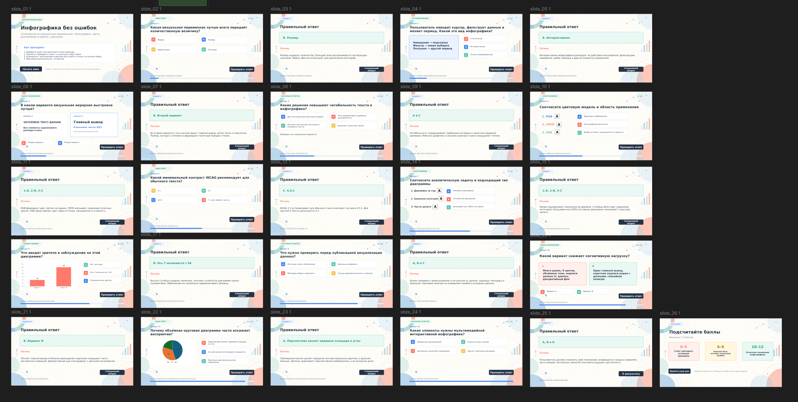

01 · INTERACTIVE UI
Город 2045
Интерактивная инфографика о городе будущего. От wireframe и сценария — к карте районов, состояниям и финальному прототипу.
PORTFOLIO / 2026
● OPEN TO WORK
Проектирую понятные web и mobile интерфейсы, визуальные системы и интерактивные digital‑продукты.
Смотреть проекты ↓SELECTED WORK

Интерактивная инфографика о городе будущего. От wireframe и сценария — к карте районов, состояниям и финальному прототипу.

Адаптивный интерфейс издательства: desktop и mobile версии, карточки книг, компоненты и UI kit.

Интернет‑магазин одежды с чистой editorial‑эстетикой: главная, каталог и карточка товара.

Мобильный магазин художественных материалов: каталог, карточка товара, корзина и оформление заказа.
MORE WORK

Серия рекламных digital‑макетов с единой сеткой, типографикой и визуальным языком.

12 вопросов, состояния ответа, объяснения, прогресс и итоговый результат.
ABOUT
Я Елена Каширова, UI/UX & Digital Designer из Москвы. Учусь на 4 курсе Московского Политеха.
Люблю собирать продукт как систему: информационная архитектура, user flow, wireframes, компоненты, адаптив и финальный визуальный язык. Технический бэкграунд помогает мне понимать, как дизайн будет жить после макета.
Работаю с Figma и Adobe Creative Cloud; знакома с HTML, CSS, JavaScript, C++, C#, Java, PHP, Unity, p5.js и инструментами motion/creative tech.
Проходила программу Innovation Entrepreneurship в Asian Institute of Technology и конкурсный отбор на IT‑стажировку Московского транспорта.